В этой главе описаны основные способы использования интегрированной среды для работы с Модула-2 кодом.
Создание новых элементов в интегрированной среде выполняется, через соответствующий мастер. Для создания нового элемента в главном меню выберите Файл > Создать > Прочие.... Появится диалог со списком мастеров создания новых элементов. Мастера объединены в иерархическую структуру. В верхней части диалога находится поле ввода фильтра, который позволяет быстро найти нужный мастер. Остается выбрать соответствующий мастер и нажать кнопку Далее.
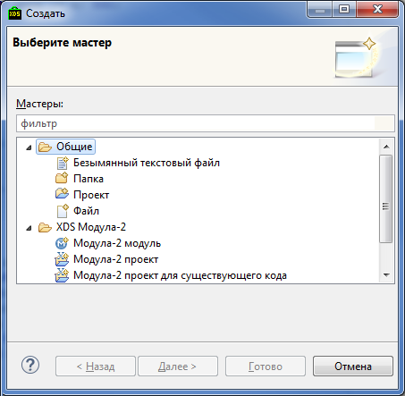
Далее мастер при помощи последовательных диалогов запрашивает необходимые для создания элемента параметры. Кнопка Готово становится активной, как только введены все обязательные параметры. После ее нажатия будет создан соответствующий элементу ресурс и присвоены начальные значения его свойствам.
Для создания нового проекта необходимо в главном меню выбрать: Файл > Создать > Модула-2 проект. В открывшемся мастере настройки необходимо указать параметры нового проекта.
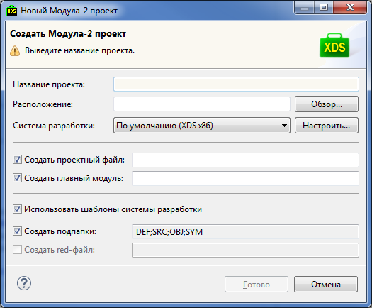
Прежде всего, необходимо указать имя нового проекта (поле Название проекта).
Далее необходимо указать месторасположение корневой директории проекта (поле Расположение).
Затем следует выбрать, какая КСП будет использоваться (поле Система разработки): если явно не указать другое, то будет использована та КСП, которая указана как используемая по умолчанию в настройках интегрированной среды. Нажав на кнопку Настроить...: можно перейти к мастеру настройки КСП интегрированной среды.
Для нового проекта можно сразу создать проектный файл, главный модуль, стандартную структуру директорий и файл перенаправлений. Имена файла проекта и файла главного модуля указываются в соответствующих строках мастера настройки (поля Создать проектный файл и Создать главный модуль соответственно). Если отмечен признак Использовать шаблоны системы разработки, то файлы будут созданы по шаблонам, указанным в настройках КСП. Структура директорий и имя файла перенаправлений также берутся из настроек выбранной КСП – автоматически будут заполнены поля Создать подпапки и Создать red-файл.
После нажатия кнопки Готово новый Модула-2 проект будет создан и добавлен в текущую рабочую область. Созданные файлы и директории отобразятся в менеджере проектов.
Для создания проекта уже существующего Модула-2 кода необходимо в главном меню выбрать: Файл > Создать > Модула-2 проект для существующего кода. В открывшемся мастере настройки необходимо указать параметры проекта.
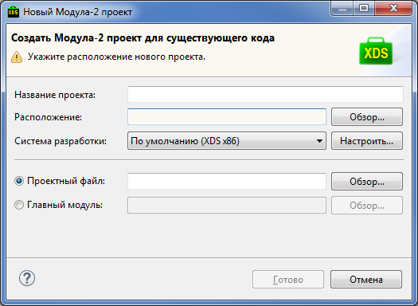
Имя нового проекта (поле Название проекта) можно указать явным образом, либо после выбора корневой директории проекта (поле Расположение) имя будет подставлено автоматически.
Также следует выбрать, какая КСП будет использоваться (поле Система разработки): если явно не указать другое, то будет использована та КСП, которая указана как используемая по умолчанию в настройках интегрированной среды. Нажав на кнопку Настроить...: можно перейти к мастеру настройки КСП интегрированной среды.
Далее необходимо указать, какой именно проектный файл (поле Проектный файл) или главный модуль (поле Главный модуль) будет использоваться при компиляции программы. При выборе корневой директории проекта система попытается заполнить данные поля автоматически. Следует проверить подставленные значения или заполнить поле вручную: по нажатию кнопки Обзор... откроется проводник, где можно выбрать файл проекта *.prj или соответственно файл главного модуля *.mod или *.ob2.
После нажатия кнопки Готово новый Модула-2 проект будет создан и добавлен в текущую рабочую область. Созданные файлы и директории отобразятся в менеджере проектов.
Для создания нового Модула-2 модуля необходимо в главном меню выбрать Файл > Создать > Прочие... либо использовать комбинацию горячих клавиш: Ctrl + N. В открывшемся диалоге нужно найти среди предлагаемых мастеров Модула-2 модуль, находящийся в категории XDS Модула-2 (для удобства выбора можно ввести в поле фильтра в верхней части диалога значение модуль). В открывшемся мастере настройки необходимо указать параметры модуля.
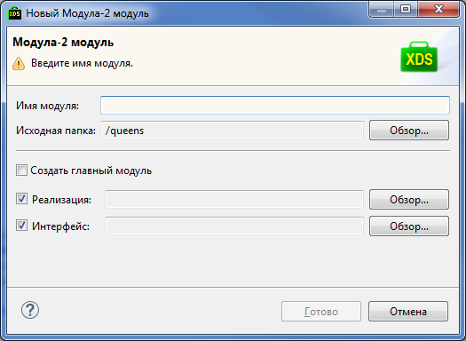
Прежде всего, необходимо указать имя нового модуля (поле Имя модуля).
Далее необходимо указать месторасположение ресурсов (поле Исходная папка). При нажатии кнопки Обзор... справа от поля можно выбрать директорию среди всех доступных директорий проектов, входящих в текущую рабочую область.
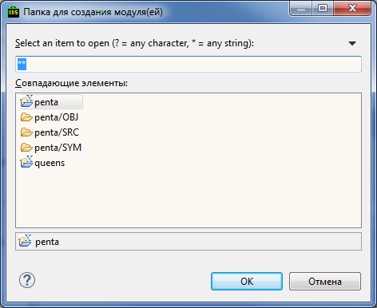
Строка в верхней части диалога позволяет быстро отфильтровать директории по названию. Можно использовать подстановочные шаблоны: * означает любое количество символов (строка) или их отсутствие, ? означает любой символ или его отсутствие. Выбор директории осуществляется нажатием кнопки OK.
Если создаваемый модуль необходимо сделать главным модулем проекта, то необходимо отметить признак Создать главный модуль. В этом случае необходимо указать файл реализации – заполнить поле Реализация.
Если модуль не является главным, то можно выбрать, необходимо ли указание файла реализации и файлов определений – поля Реализация и Интерфейс соответственно. При выборе признака необходимо заполнение поля: имя файла подставляется автоматически после указания имени модуля, а при нажатии кнопки Обзор... открывается диалог, позволяющий выбрать местоположение файла (диалог аналогичен диалогу выбора местоположения ресурсов, но выбор предлагается осуществить среди поддиректорий директории ресурсов); выбор местоположения осуществляется нажатием кнопки OK.
После нажатия кнопки Готово новый Модула-2 модуль будет создан и добавлен в выбранную директорию. Созданные файлы отобразятся в менеджере проектов.
В разделе XDS Модула-2 > Системы разработки можно зарегистрировать новые и настроить уже зарегистрированные КСП.
Для регистрации новой КСП необходимо в правой части диалога нажать кнопку Добавить и выбрать каталог, в который установлена подключаемая КСП.
Если выбранная КСП подготовлена для интеграции со средой разработки (в корневом каталоге КСП находится файл sdk.ini), то в списке установленных систем программирования появится новая запись, соответствующая выбранной КСП.
Еcли же файл sdk.ini отсутствует, то откроется мастер для ручной настройки на данную КСП. Мастер настройки КСП можно открыть в любой момент, выбрав в списке желаемую систему программирования и нажав кнопку Изменить.
Удалить КСП из списка можно нажатием кнопки Удалить.
Для выделенной в списке КСП можно сохранить файл с настройками *.ini. Для этого необходимо нажать кнопку Экспорт, выбрать место для сохранения и ввести имя файла.
Если сделаны какие-либо изменения в списке КСП, например, изменена КСП, используемая по умолчанию, то применить изменения, не закрывая диалог, можно нажатием кнопки Применить.
Для изменения параметров КСП служит мастер настройки КСП.
Мастер настройки КСП выглядит следующим образом:
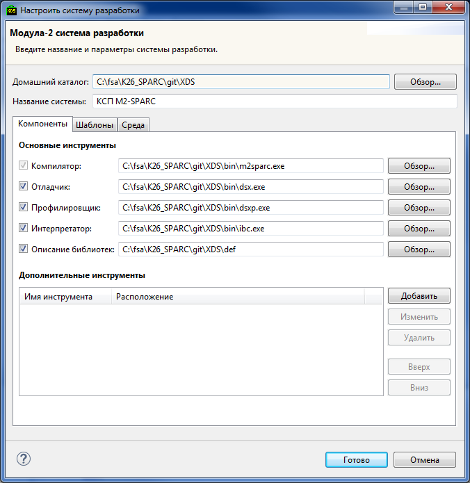
В верхней части мастера настройки КСП в полях Домашний каталог и Название системы вводятся соответственно путь к корневому каталогу КСП и имя КСП. Если при вводе имени КСП будет введено имя, уже использующееся средой, то в информационной строке будет отображено предупреждение.
Ниже можно видеть три закладки: Компоненты, Шаблоны, Среда.
На первой закладке в разделе Основные инструменты указываются основные инструменты, используемые КСП, такие как:
Ниже в разделе Дополнительные инструменты можно указать дополнительные инструменты. Добавленным инструментам будут соответствовать пункты меню, причем пункты эти могут группироваться в подменю, среди пунктов могут использоваться разделители. В окне Дополнительные инструменты воспроизводится вся структура меню. Для добавления нового пункта в меню следует справа от списка инструментов нажать кнопку Добавить. После этого появится диалог выбора того, что именно нужно добавить:
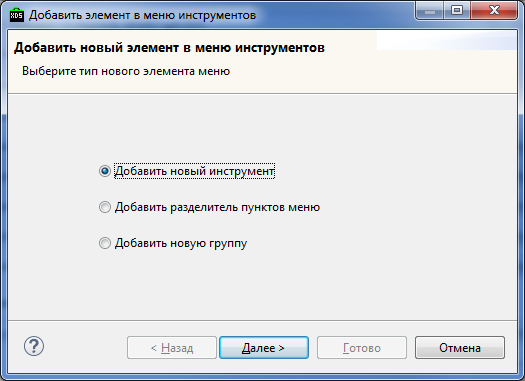
Тут можно выбрать:
Порядок применения дополнительных инструментов и, соответственно, порядок в котором они показываются в меню, можно задавать, используя кнопки Вверх и Вниз справа от списка инструментов.
Чтобы переместить инструмент из одной группы в другую, следует открыть диалог редактирования свойств этого инструмента и поменять группу в нем.
На закладке Шаблоны специфицируются типы файлов и шаблоны, по которым будут создаваться файлы для новых проектов, если соответствующий признак будет отмечен.

В разделе Типы файлов можно указать два параметра:
В разделе Шаблоны файлов определяется какие именно шаблоны заданы для данной КСП. Можно задать следующие шаблоны:
В разделе Структура папок определяются имена директорий, используемых при создании нового проекта:
На закладке Среда перечисляются переменные среды.
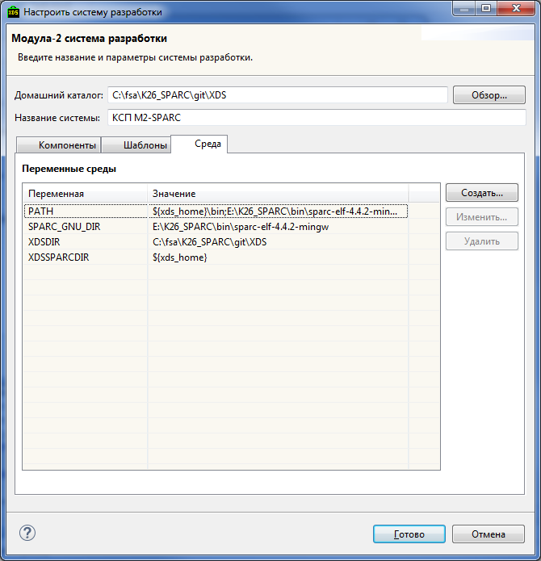
Добавить новую переменную можно, нажав справа от списка кнопку Создать.... В открывшемся мастере настройки необходимо заполнить свойства и нажать кнопку Готово. Мастер настройки свойств можно открыть в любой момент, выбрав в списке нужную переменную и нажав кнопку Изменить.... Переменные из списка удаляются кнопкой Удалить.
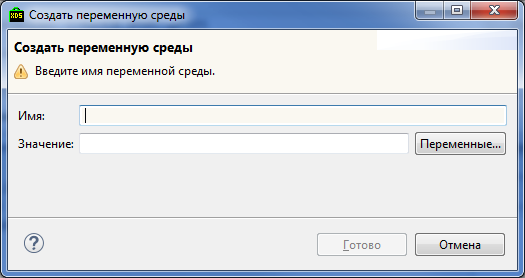
Для переменной заполняются следующие свойства:
Обязательным для заполнения является только имя переменной. При указании значения переменной можно использовать переменные среды – список открывается нажатием кнопки Переменные....
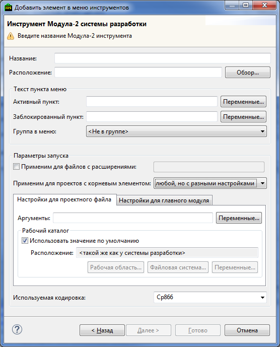
Для дополнительных инструментов прежде всего следует указать основные настройки:
В разделе Текст пункта меню можно специфицировать названия пунктов в меню для добавляемого дополнительного инструмента. Можно указать различные названия: название для активного пункта меню (поле Активный пункт) и название, используемое, когда инструмент не доступен для запуска (поле Заблокированный пункт). Если поля не заполнены, то будет использоваться название инструмента.
Пункт меню с указанным названием появляется подпунктом к пункту Инструменты основного меню среды или в соответствующей инструменту группе показанной в меню Инструменты.
Группу, в которой будет показываться инструмент, можно поменять в списке Группа в меню. Если выбрано <Не в группе>, инструмент будет показан в самом меню Инструменты.
В разделе Параметры запуска указываются настройки для запуска инструмента.
Если отмечен признак Применим для файлов с расширениями, то инструмент применяется только для файлов с указанными расширениями: в этом случае становится доступным поле для ввода, в котором расширения должны быть перечислены через точку с запятой.
В поле Применим для проектов с корневым элементом необходимо выбрать, для каких типов проекта доступен инструмент. Возможны следующие варианты:
После выбора типа проекта следует указать настройки на закладке ниже (в случае выбора второго пункта необходимо заполнить две закладки): можно указать аргументы и рабочий каталог.
В поле Используемая кодировка внизу диалога можно указать какая кодировка должна использоваться для исходящих сообщений инструмента.
Для указания аргументов можно использовать список переменных среды. Для открытия списка следует нажать кнопку Переменные... справа от поля. Подробнее об использовании переменных можно прочитать в разделе Работа с переменными.
Рабочий каталог указывается в разделе Рабочий каталог. Можно использовать рабочий каталог КСП – в этом случае следует отметить признак Использовать значение по умолчанию, или указать вручную в поле Расположение (см. раздел Выбор каталога или файла).
Для того чтобы создать или отредактировать конфигурацию запуска приложения в главном меню необходимо выбрать: Запуск > Выполнить... либо Запуск > Отладить....
Для создания новой конфигурации запуска приложения в левой панели открывшегося диалога нужно выбрать XDS Модула-2 программа, щелчком правой кнопки мыши открыть контекстное меню и выбрать Создать. Будет создана новая конфигурация запуска приложения, а в правой панели откроется диалог для ввода параметров.
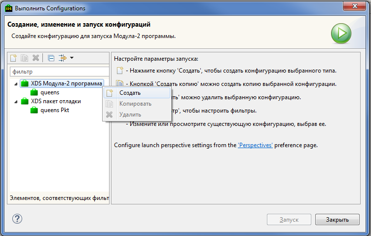
Для изменения параметров существующей конфигурации запуска приложения необходимо просто выбрать её в левой панели диалога – в правой панели откроются свойства выбранной конфигурации.
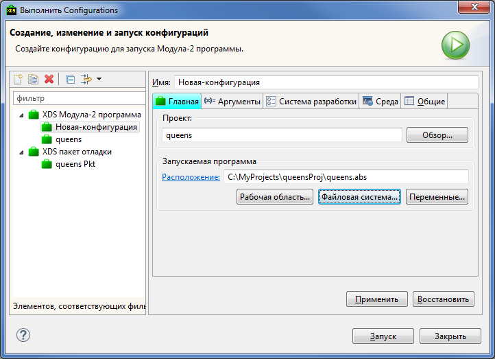
Каждая конфигурация запуска приложения должна иметь свое уникальное имя – его необходимо ввести в поле Имя.
После заполнения обязательных полей необходимо нажать кнопку Запуск или Выполнить (в зависимости от того, какой пункт в меню был выбран изначально) для сохранения конфигурации и запуска программы. Если требуется сохранить изменения в конфигурации запуска не запуская программу, то следует нажать сначала кнопку Применить, а затем закрыть диалог нажатием кнопки Закрыть. Восстановить последние сохраненные значения можно нажатием кнопки Восстановить.
Далее описаны вкладки, на которых заполняются параметры при создании новой или редактировании существующей конфигурации запуска приложения.
На вкладке Главная необходимо выбрать проект, для которого будет создана конфигурация запуска – заполнить раздел Проект. Проект выбирается из всех проектов текущей рабочей области: можно ввести имя проекта вручную или нажать кнопку Обзор... и воспользоваться диалогом выбора.
Далее указывается программный файл *.prg для запуска – это можно сделать в разделе Запускаемая программа (см. раздел Выбор каталога или файла).
На вкладке Аргументы можно задать аргументы для запускаемой программы, а также указать рабочую директорию.
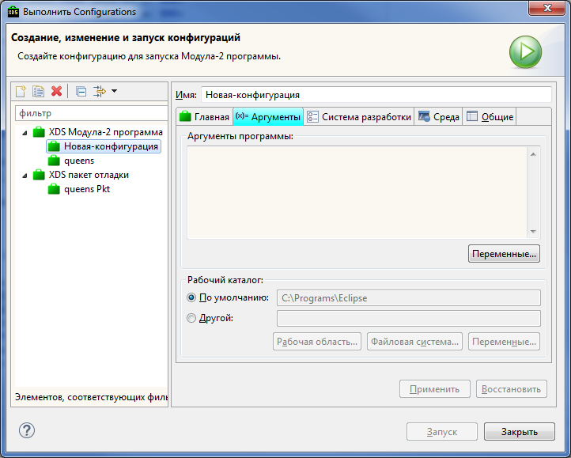
В разделе Аргументы программы указываются собственно аргументы программы. Для указания аргументов можно использовать список переменных среды. Для открытия списка следует нажать кнопку Переменные... справа от поля. Подробнее об использовании переменных можно прочитать в разделе Работа с переменными.
В разделе Рабочий каталог можно выбрать, использовать ли каталог проекта – пункт По умолчанию, или другой каталог – пункт Другой (см. раздел Выбор каталога или файла).
На вкладке Система разработки указываются аргументы для моделирующей программы и отладчика – соответственно в разделах Аргументы интерпретатора и Аргументы отладчика.
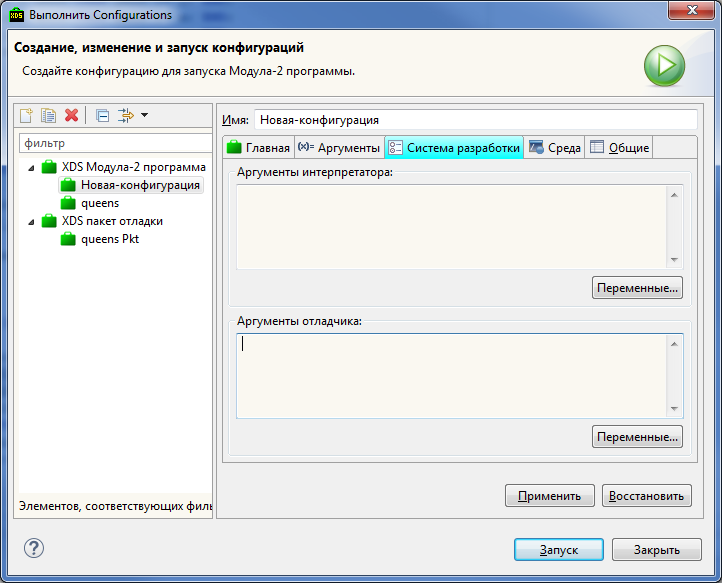
При указании аргументов можно использовать переменные среды. Подробнее об использовании переменных среды смотрите в разделе Работа с переменными.
На вкладке Среда устанавливаются переменные среды.
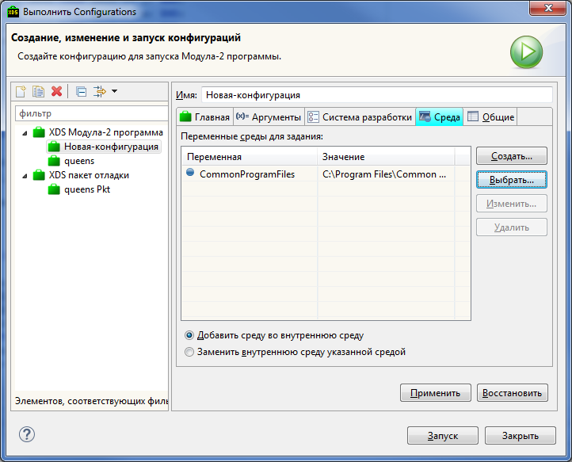
Добавить новую переменную среды можно, нажав кнопку Создать... в правой части диалога.
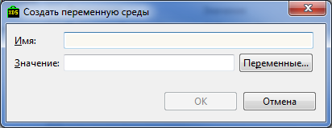
В открывшемся окне нужно ввести имя переменной среды – заполнить поле Имя (обязательное поле) и её значение – поле Значение). Значение переменной среды может быть введено вручную, или использованы переменные, список которых открывается при нажатии кнопки Переменные.... Переменная добавляется в список нажатием кнопки OK.
Аналогичное окно для редактирования переменной среды открывается при выборе её в списке и нажатии кнопки Изменить... в правой части диалога. Изменения сохраняются нажатием кнопки OK.
Также переменную среды можно добавить путём выбора из списка. Для его открытия необходимо нажать кнопку Выбрать....
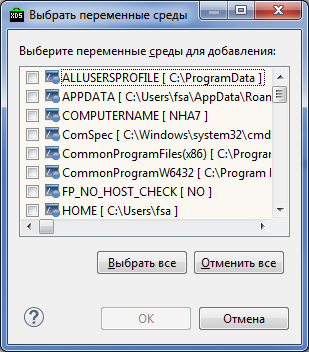
Нужные переменные отмечаются в списке. Можно использовать кнопки Выбрать все и Отменить все для отметки всех переменных или снятия отметки со всех переменных соответственно. Отмеченные переменные добавляются в список переменных среды нажатием кнопки OK.
Удалить переменную среды из списка можно выделив её в списке и нажав кнопку Удалить.
Если в списке присутствует хотя бы одна переменная среды, то в нижней части диалога становится доступным выбор:
На владке Общие задаются общие настройки конфигурации запуска.

В разделе Сохранить как можно выбрать, сохранять ли конфигурацию как локальный файл (пункт Локальный файл) или как общедоступный файл (пункт Общий файл). Во втором случае становится доступным поле для ввода, в котором необходимо указать путь до директории для сохранения.
В разделе Показывать в меню Избранное можно отметить, показывать ли данную конфигурацию запуска среди предпочитаемых пунктов меню запуска и меню отладки.
В разделе Encoding выбирается кодировка: используемая по умолчанию (пункт По умолчанию) или указанная (пункт Прочие).
В разделе stdin и stdout выбираются инструменты для ввода-вывода. Могут быть использованы:
При указании файла он может дополняться, если отмечен признак Добавить.
В нижней части диалога указывается, нужно ли запускать программу в фоновом режиме – признак Запустить в фоновом режиме.
Для того чтобы создать или отредактировать конфигурацию запуска пакета отладки в главном меню необходимо выбрать: Запуск > Выполнить... либо Запуск > Отладить....
Для создания новой конфигурации запуска пакета отладки в левой панели открывшегося диалога нужно выбрать XDS пакет отладки, щелчком правой кнопки мыши открыть контекстное меню и выбрать Создать. Будет создана новая конфигурация запуска пакета отладки, а в правой панели откроется диалог для ввода параметров.
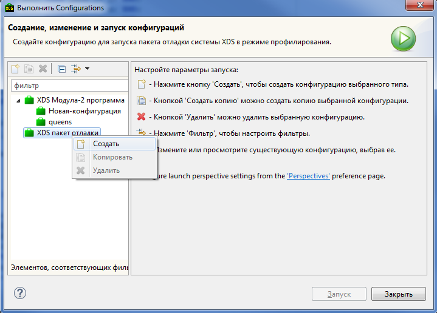
Для изменения параметров существующей конфигурации запуска пакета отладки необходимо просто выбрать её в левой панели диалога – в правой панели откроются свойства выбранной конфигурации.
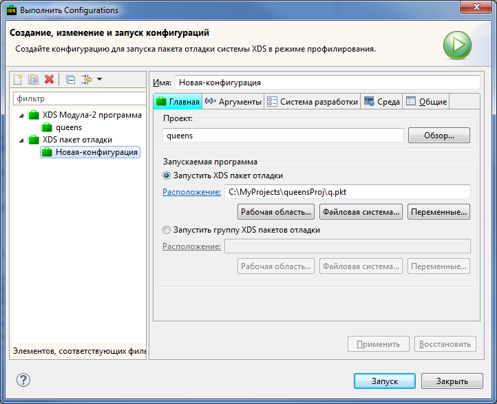
Каждая конфигурация запуска пакета отладки должна иметь свое уникальное имя – его необходимо ввести в поле Имя.
После заполнения обязательных полей необходимо нажать кнопку Запуск или Выполнить (в зависимости от того, какой пункт в меню был выбран изначально) для сохранения конфигурации и запуска пакета отладки. Если требуется сохранить изменения в конфигурации запуска не запуская пакет отладки, то следует нажать сначала кнопку Применить, а затем закрыть диалог нажатием кнопки Закрыть. Восстановить последние сохраненные значения можно нажатием кнопки Восстановить.
Далее описаны вкладки, на которых заполняются параметры при создании новой или редактировании существующей конфигурации запуска пакета отладки.
На вкладке Главная необходимо выбрать проект, для которого будет создана конфигурация запуска – заполнить раздел Проект. Проект выбирается из всех проектов текущей рабочей области: можно ввести имя проекта вручную или нажать кнопку Обзор... и воспользоваться диалогом выбора.
Далее необходимо выбрать, использовать ли одиночный скрипт отладки или пакет отладки. При выборе первого варианта (Запустить XDS пакет отладки) необходимо указать файл *.pkt, при выборе второго варианта (Запустить группу XDS пакетов отладки) – файл *.ldp (см. раздел Выбор каталога или файла).
Вкладка заполняется аналогично заполнению вкладки Аргументы при редактировании конфигурации запуска приложения. Смотри раздел Вкладка Аргументы.
На вкладке Система разработки указываются аргументы для отладчика – в разделе Аргументы отладчика.
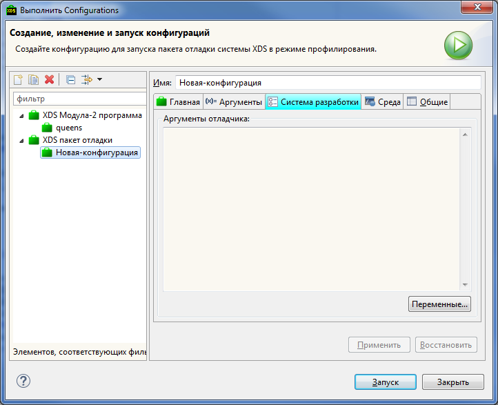
При указании аргументов можно использовать переменные среды. Подробнее об использовании переменных среды смотрите в разделе Работа с переменными.
Вкладка заполняется аналогично заполнению вкладки Среда при редактировании конфигурации запуска приложения. Смотри раздел Вкладка Среда.
Вкладка заполняется аналогично заполнению вкладки Общие при редактировании конфигурации запуска приложения. Смотри раздел Вкладка Общие.
Выбор каталога или файла часто используется в различных диалогах и мастерах настройки. Необходимо заполнить поле Расположение, что можно сделать вручную или воспользовавшись кнопками:
После заполнения поля, название поля Расположение станет ссылкой, по нажатию на которую открывается проводник операционной системы, где указанная директория является текущей, если поле заполнено корректно; в противном случае, если путь указан не корректно, среда выдаст ошибку.
При заполнении полей различных диалогов часто используются переменные среды. Список переменных открывается обычно нажатием кнопки Переменные....
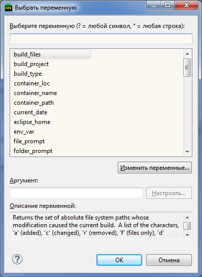
Строка в верхней части диалога позволяет быстро отфильтровать переменные по названию. Можно использовать подстановочные шаблоны: * означает любое количество символов (строка) или их отсутствие, ? означает любой символ или его отсутствие.
По умолчанию в списке отображаются только общие переменные. Если отметить признак Показать все, то в списке будут показаны все переменные среды. Однако надо иметь в виду, что некоторые переменные могут быть не доступны в указанном контексте.
При выделении переменной в списке в поле Описание переменной показывается краткое описание переменной. Для некоторых переменных также можно ввести аргументы – в этом случае поле Аргумент становится доступным, – которые в свою очередь в некоторых случаях можно сконфигурировать, нажав на кнопку Настроить....
Подтверждение выбора аргумента и закрытие диалога осуществляется нажатием кнопки OK.
Диалог конфигурации аргументов выглядит следующим образом.
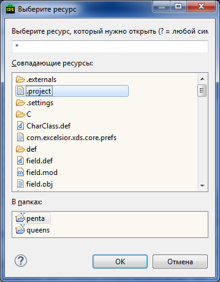
Строка в верхней части диалога позволяет быстро отфильтровать возможные ресурсы по названию. Можно использовать подстановочные шаблоны: * означает любое количество символов (строка) или их отсутствие, ? означает любой символ или его отсутствие. После заполнения данного поля в поле Совпадающие ресурсы будут отображены ресурсы с названием, соответствующим введенному условию. А при выделении ресурса в поле В папках отобразится его местоположение. После выбора ресурса диалог закрывается кнопкой OK.
Список переменных можно пополнить, нажав на кнопку Изменить переменные.... Для добавления новой переменной необходимо нажать кнопку Создать... в правой части открывшегося диалога.
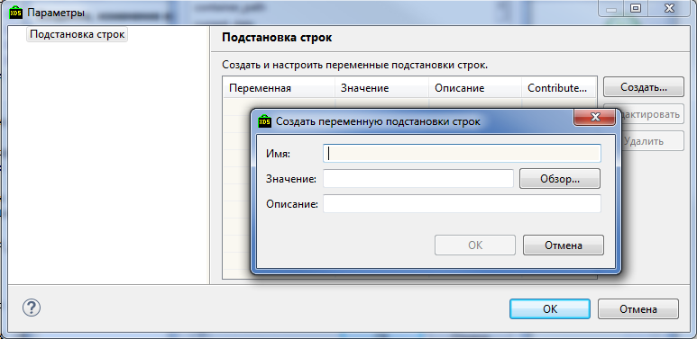
В открывшемся окне нужно ввести имя переменной (поле Имя), её значение – директорию (поле Значение) и описание (поле Описание). Обязательным является только имя переменной, которое не может быть изменено при редактировании переменной. Переменная добавляется в список нажатием кнопки OK.
Можно отредактировать значение и описание существующей переменной, выделив её в списке и нажав кнопку Редактировать, а также удалить переменную, нажав кнопку Удалить.
Редактирование
Ctrl+Z
Отменить редактирование
Ctrl+Shift+Z
Повторить редактирование
Ctrl+Y
Удалить строку
Ctrl+/
Закомментировать/раскомментировать строки
Ctrl+Shift+/
Закомментировать выделенное
Ctrl+Shift+\
Убрать комментарий
Ctrl+I
Откорректрировать отсупы выделенных строк
Ctrl+Shift+F
Отформатировать выделенный текст
Alt+Shift+Вверх
Выделить объемлющий элемент
Alt+Shift+Вниз
Восстановить выделение
Ctrl+R
Переименовать объект
Поиск
Ctrl+F
Открыть xFind панель поиска
Ctrl+Вверх
xFind: быстро найти предыдущее вхождение
Ctrl+Вниз
xFind: быстро найти следующее вхождение
Ctrl+Alt+F
Диалог поиска и замены
Ctrl+H
Модула-2 поиск
Ctrl+G
Найти объявления выбранного элемента в рабочей области
Ctrl+Shift+G
Найти ссылки на выбранный элемент в рабочей области
Навигация
Ctrl+L
Перейти к стороке по номеру
F3
Открыть объявление выбранного элемента
Ctrl+M
Открыть модуль из списка
Ctrl+P
Открыть парный модуль
Alt+Shift+O
Разрешить/запретить отмечать вхождения объектов
Компиляция и запуск
F9
Компилировать файл
Shift+F9
Собрать проект
Ctrl+Shift+F9
Полностью пересобрать проект
Ctrl+F11
Запустить последнюю запускавшуюся конфигурацию запуска
F11
Запустить последнюю запускавшуюся конфигурацию дебаггера
Ctrl+F9
Запустить выбранный пакет отладки
Нумерованные закладки
Ctrl+Shift+<цифра>
Добавить или удалить соответствующую закладку в текущей строке
Ctrl+<цифра>
Перейти к соответствующей закладке
Ctrl+=
Перейти к закладке
Ctrl+Shift+=
Добавить или удалить закладку
Прочее
Ctrl+O
Показать схему модуля (outline)
F2
Показать всплывающую контекстную подсказку
F12
Показать контекстную подсказку
Ctrl+Shift+L
Показать справку по клавишам
Alt+F9
Максимизировать/восстановать размеры окна редактора
Ctrl+Tab
Переключение на следующее окно редактора
Ctrl+‘
Переключение между панелями